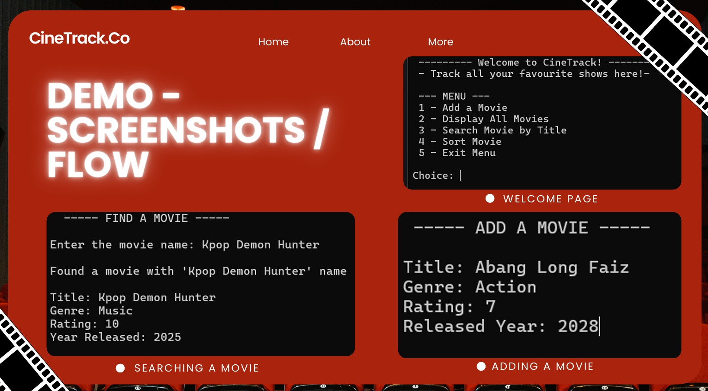
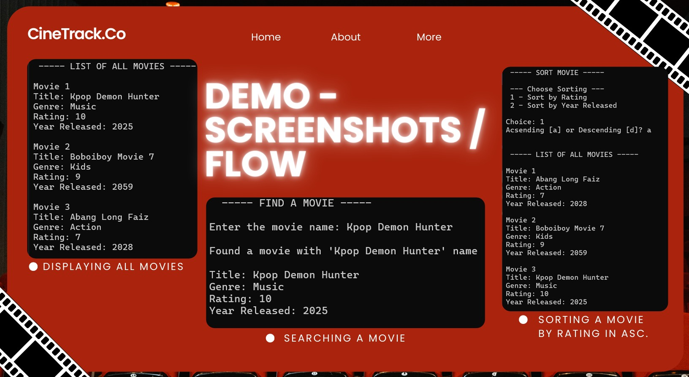
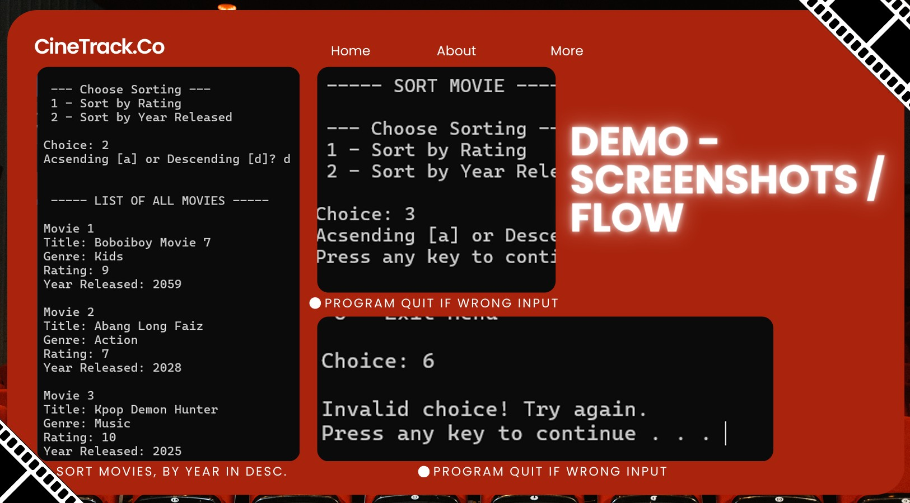

C++ Console Application
CineTrack: A Smart Movie Tracker System
A CLI movie-tracking tool implementing custom pointers and linked list data structures to store, sort, and retrieve user watchlists dynamically.



Project Overview
CineTrack addresses the need for film enthusiasts to log, filter, and structure their watched/to-watch movie catalogs. Instead of using standard containers like standard vectors, this program builds a dynamic memory watchlist utilizing custom Linked Lists in C++, detailing pointer manipulation and sorting methodologies.
Key Features
Dynamic Memory Watchlist
Node-based, unlimited entries
Data Filtering
Search by name, genre, rating, year
Watchlist Sorting
Bubble sort by rating or release date
Persistent Storage
File-based data across executions
Algorithms & Custom Structures
Pointer Manipulation
Sorting via Node Swaps
Custom Memory Cleanup